Series Destacadas
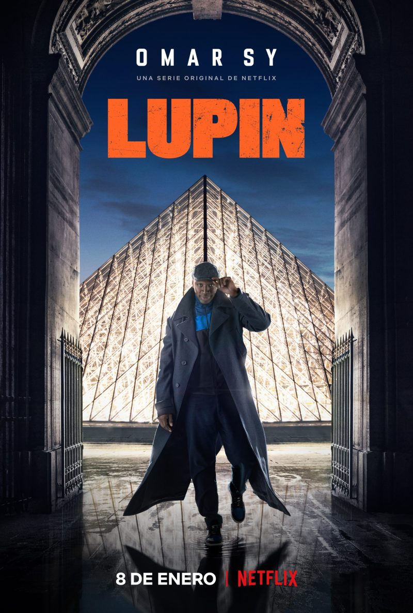
Lupin se inspira en el famoso personaje literario Arsène Lupin, un ladrón de guante blanco y uno de los personajes más célebres de la cultura francesa.
La historia sigue a Assane Diop, una persona que ha crecido con las historias de este célebre ladrón literario. Cuando éste descubre que la muerte de su padre va más allá de lo que creía, se involucra en una red de criminales que hará que se dedique a su gran pasión: el robo.
Assane Diop creció junto a su padre en una gran mansión donde éste trabajaba como chófer de una familia adinerada. Sin embargo, el destino de su padre se vio oscurecido cuando es acusado injustamente del robo de un preciado collar, el mismo que intenta robar Assane Diop años después cuando ya es un adulto y tiene un hijo
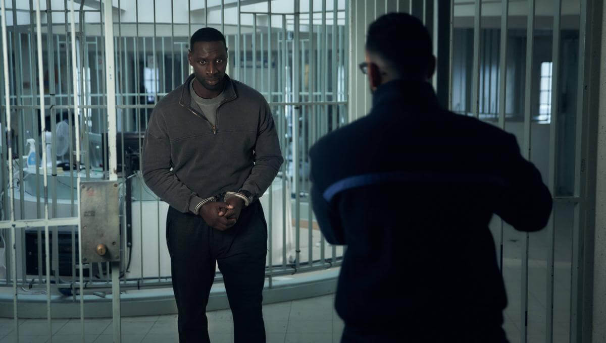
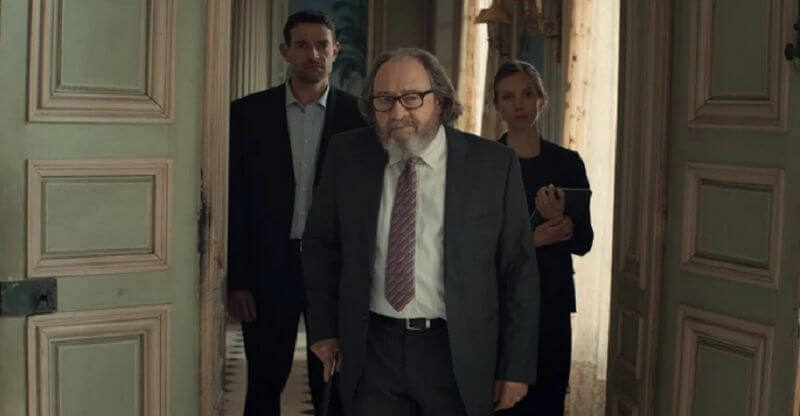
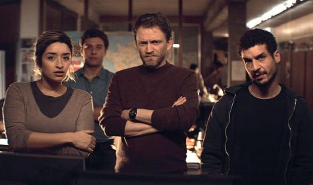
La Casa De Papel

La casa de papel es una serie de televisión española creada por Álex Pina y producida por Atresmedia y posteriormente por Netflix. Protagonizada por Úrsula Corberó, Itziar Ituño y Álvaro Morte, se presentó en el III Festival de Televisión de Primavera en Burgos en marzo de 2017 y el 2 de mayo de ese mismo año se estrenó en la cadena española Antena. Esta cadena distribuyó las dos primeras partes de la serie en España antes de que Netflix la adquiriera a finales de 2017 y la editase, reeditase y distribuyese las dos partes por todo el mundo.
Un misterioso hombre conocido como «El Profesor» está planeando el mayor atraco de la historia: entrar en la Fábrica Nacional de Moneda y Timbre e imprimir 2400 millones de euros. Para llevar a cabo este ambicioso plan, recluta a un equipo de ocho personas con ciertas habilidades y que no tienen nada que perder. Este equipo requiere de once días de reclusión en la Fábrica, durante los cuales tendrá que lidiar con las fuerzas de élite de la policía y sesenta y siete rehenes.
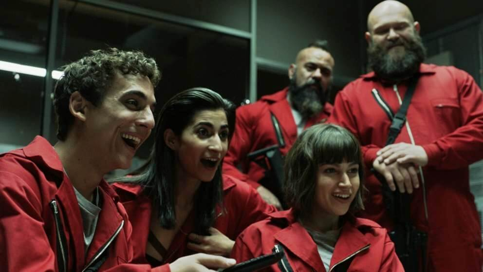
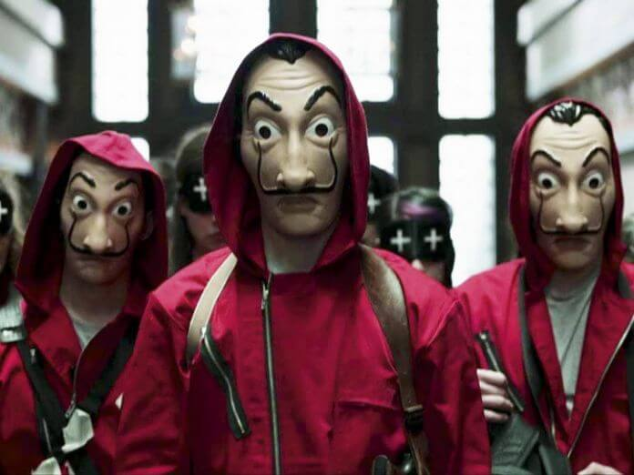
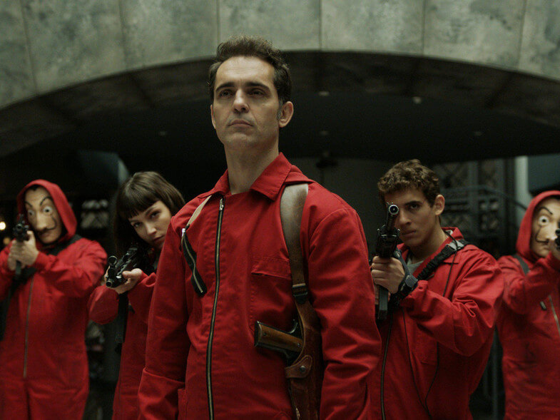
The Act
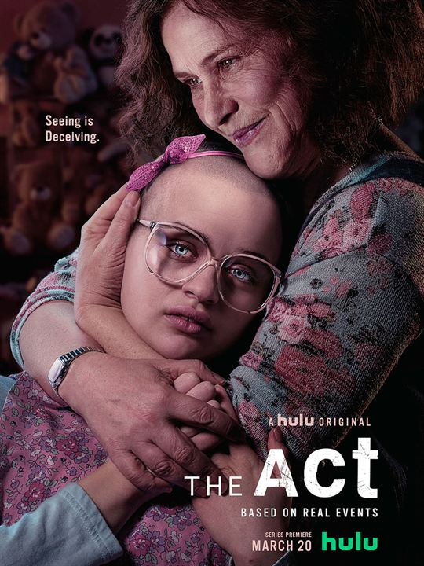
La serie, que se divide en dos tiempos (el pasado y el presente), sigue la historia de Gypsy Blanchard (Joey King), una joven que está confinada a su silla de ruedas debido a una enfermedad. Al crecer, su relación con su madre sobreprotectora (Patricia Arquette) comienza a agriarse a medida que insiste cada vez más en su independencia. Así se revela cómo su madre, que dedicó su vida a su cuidado, se vuelve más protectora, controladora y abusiva, particularmente en medio de su intento de explorar su sexualidad.
La relación se vuelve aún más problemática a medida que Gypsy descubre muchos secretos. Ella creció creyendo que estaba enferma de cáncer, pero descubre que no estaba enferma en absoluto. Su madre, Dee Dee, engañó con éxito no sólo a Gypsy, sino también a su familia, amigos y profesionales de la medicina, haciéndoles creer que su hija estaba enferma.
La narración finalmente conduce al asesinato después de que Gypsy le pide a su novio que mate a su madre.
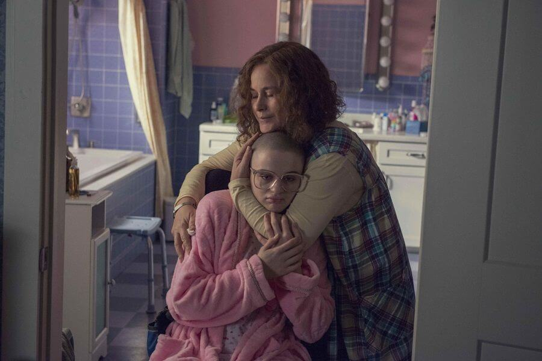
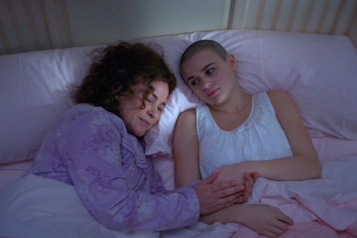
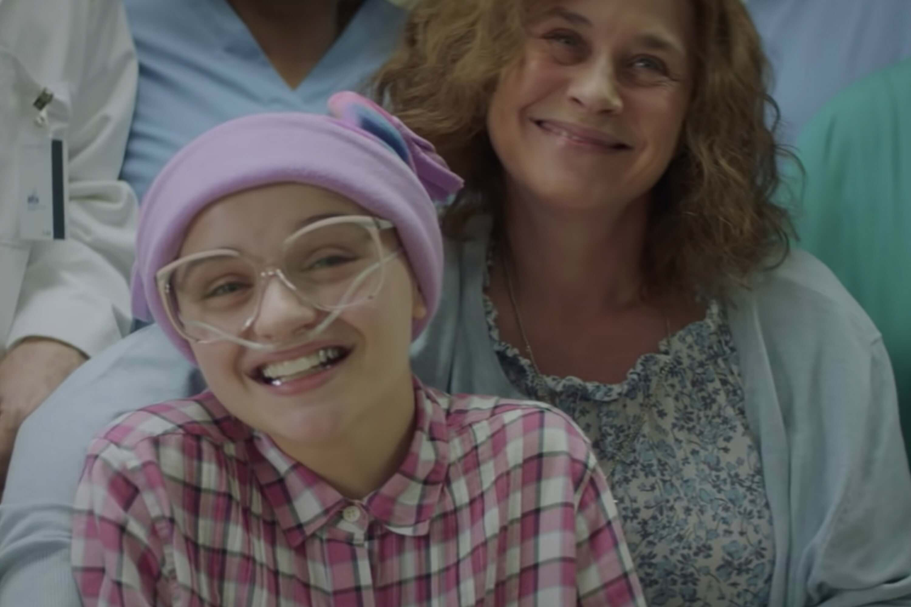
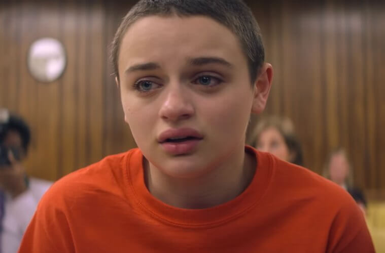
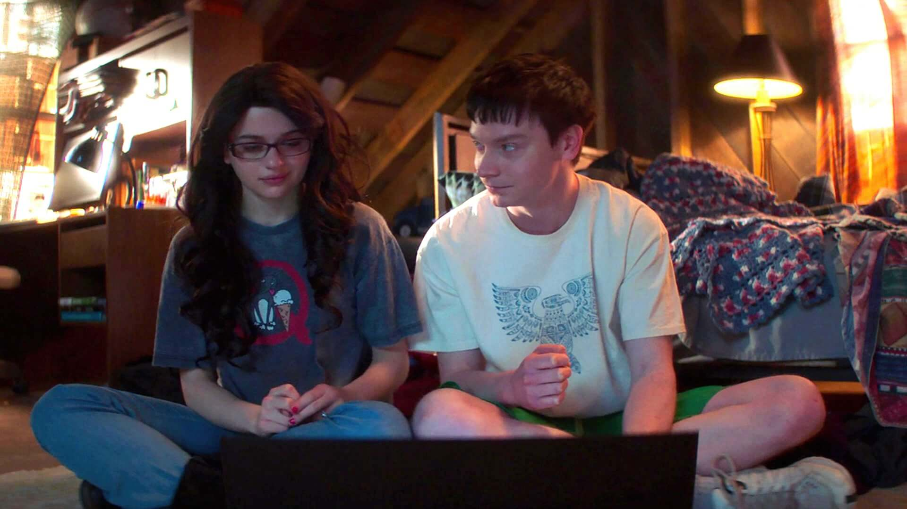
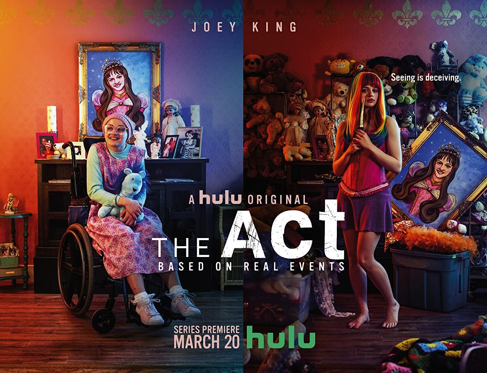